按章审阅 · 8 张剧情图。点击图查看大图。
竹篙戳中干渠，漂亮舆图被现实当场反驳。
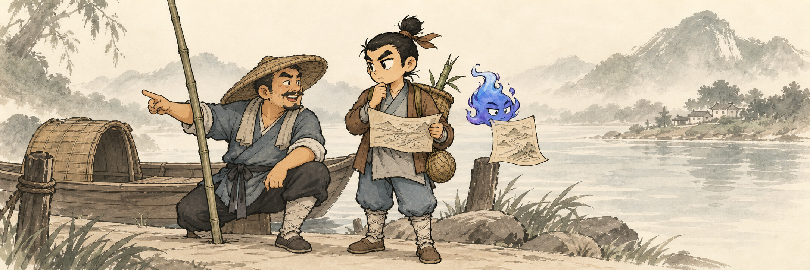
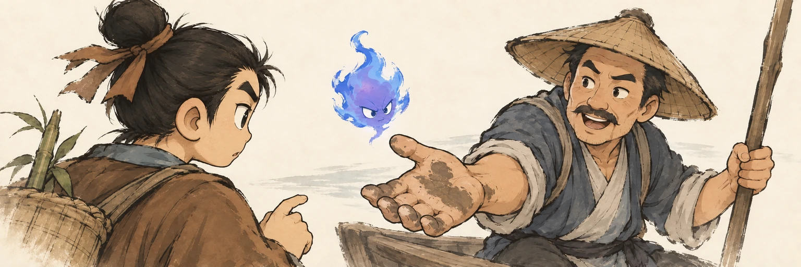
被误认为讨价的手，翻过来是连夜清渠的泥痕。
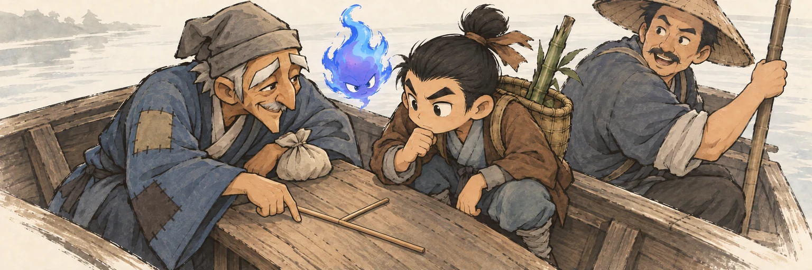
受助老人用两根筷子讲清水路，双方从施舍关系变成平等交换。
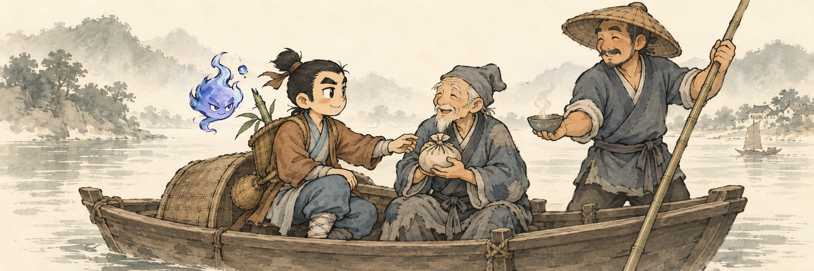
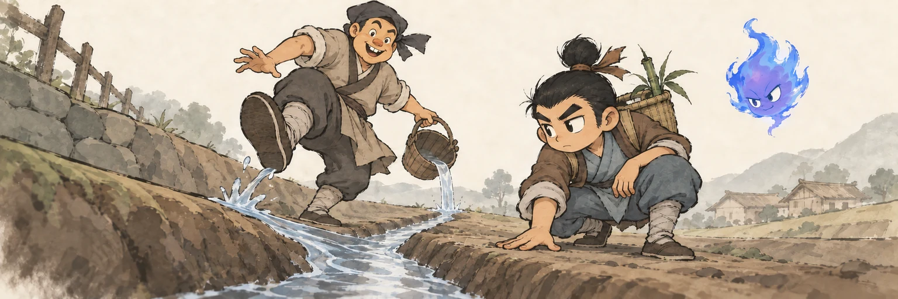
测试水流原路回到挖沟人的鞋边，一眼看清‘漂亮却逆坡’的错误。
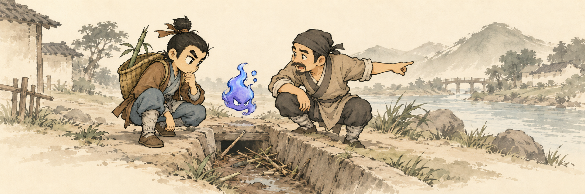
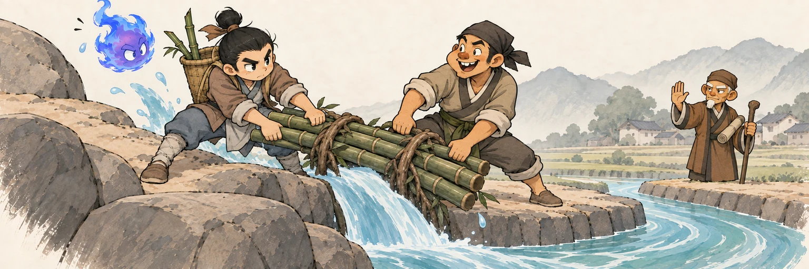
合力抽出堵口竹枝的一瞬，一股清水终于拐入旧渠；这是全章劳动的高潮。
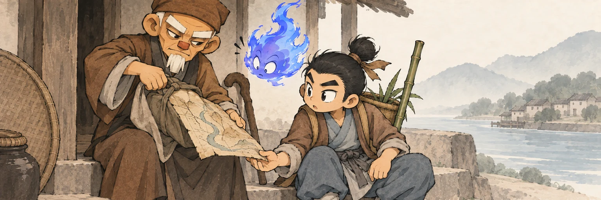
村长从贴身袖包抽出磨软的实用古图，反转‘珍贵古图必有隆重仪式’。
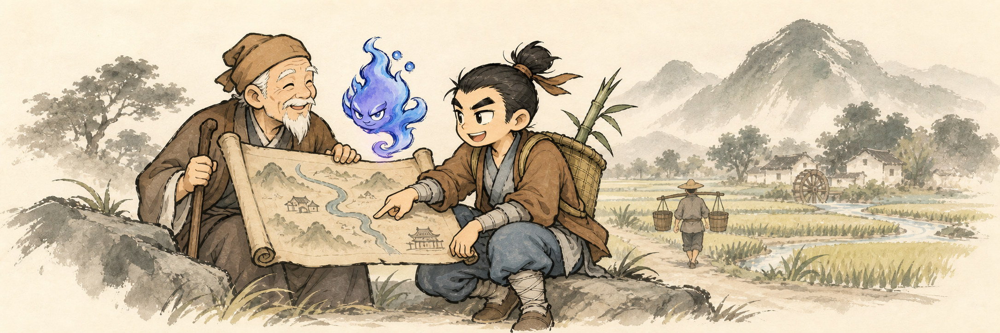
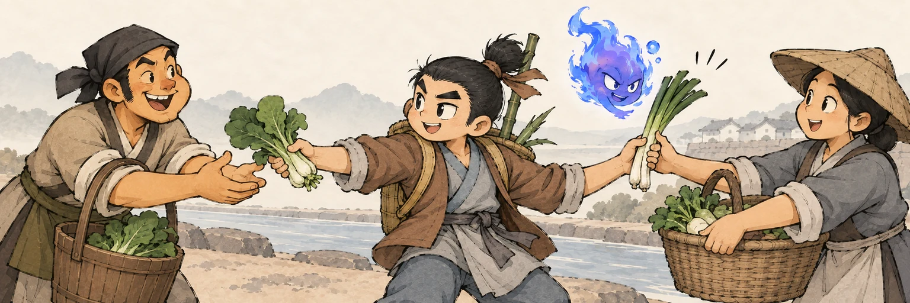
谢礼被主角顺手分回劳动者，形成热闹的人与菜的接力。
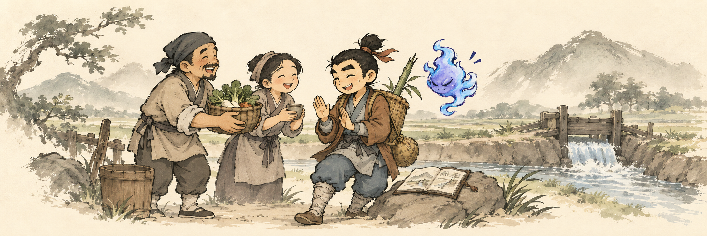
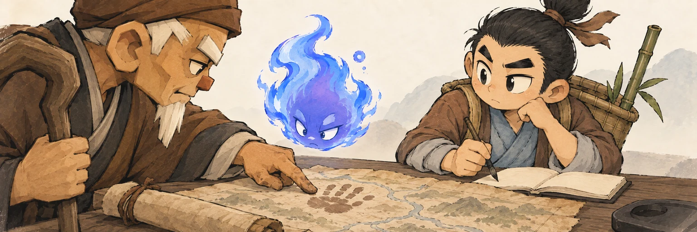
带泥的指尖与古图旧手印相叠，幽白意识到守图也是守住许多普通人的经验。
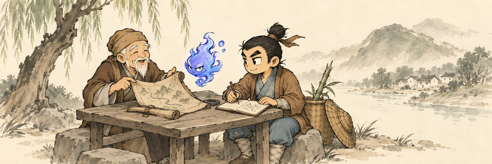